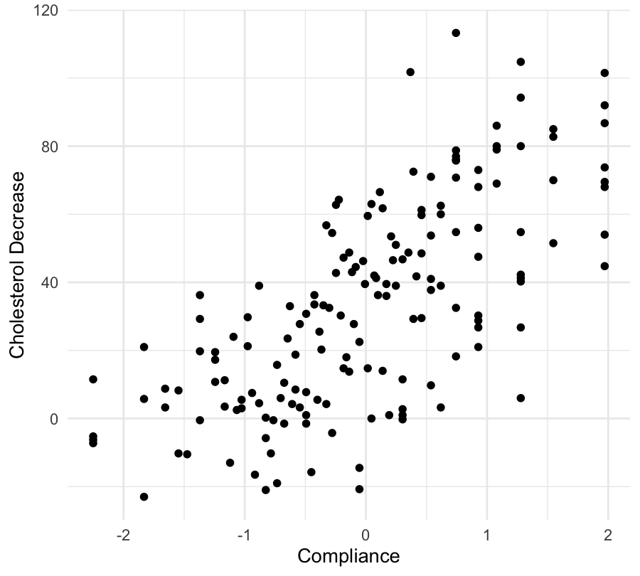
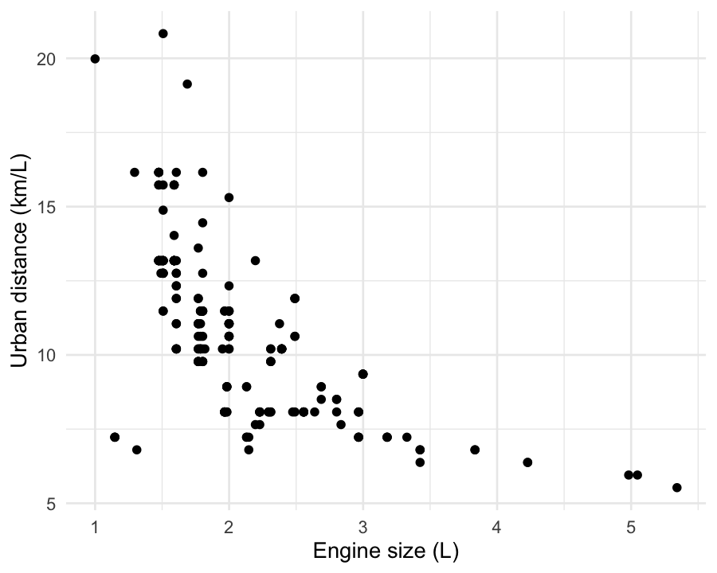
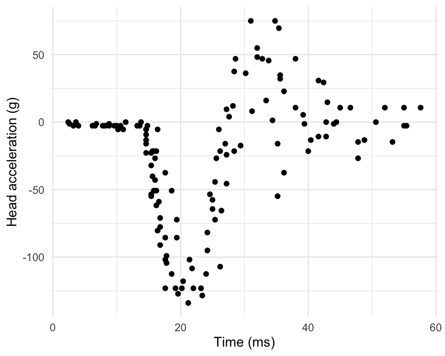
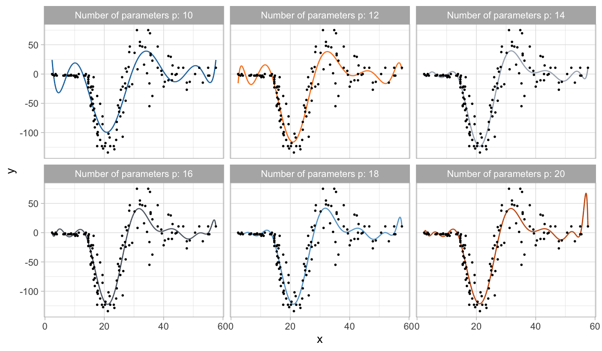
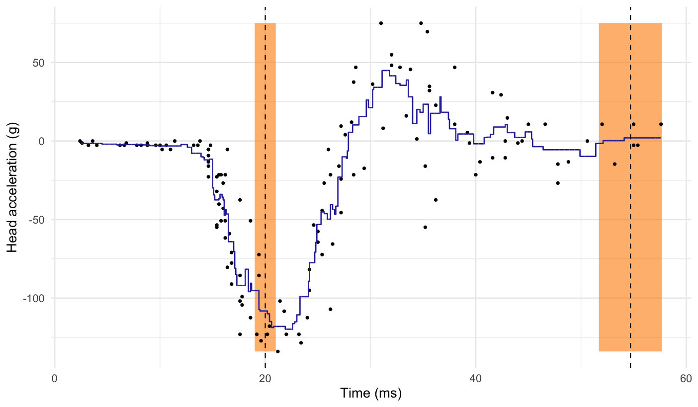
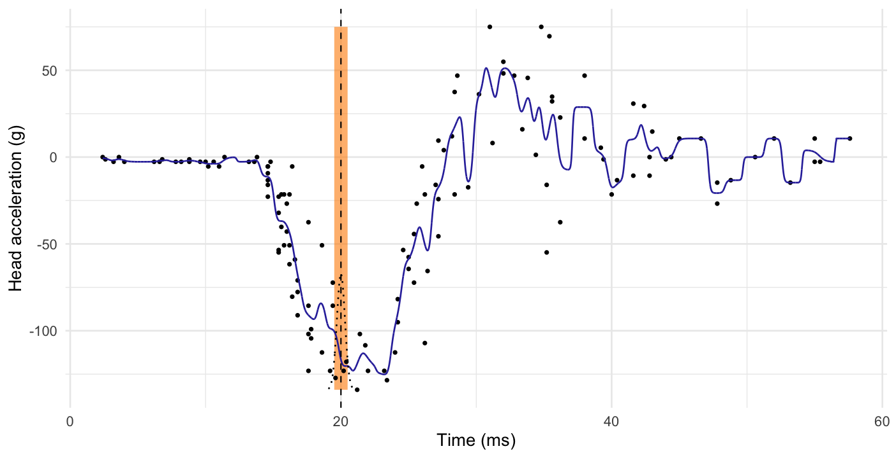
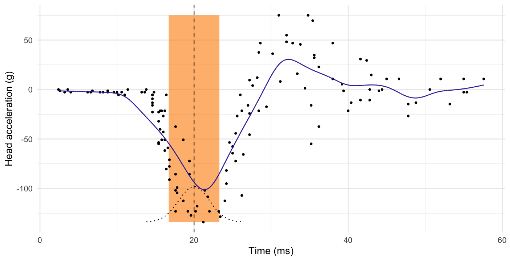
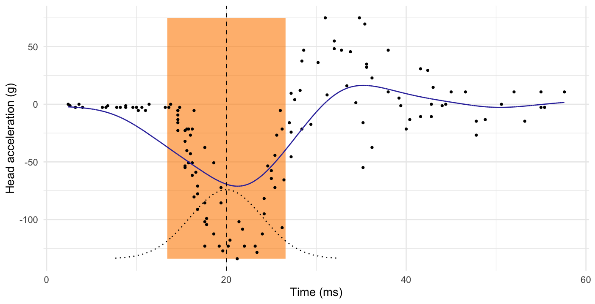

Nonparametric regression
Data Mining - CdL CLAMSES
Homepage

“Nonparametric regression might, like linear regression, become an object treasured both for its artistic merit as well as usefulness.”
Leo Breiman
In this unit we will cover the following topics:
- Kernel methods and local regression;
- Regression splines;
- Smoothing splines.
Let us consider again the relationship between a response variable Y_i and a set of covariates \bm{x}_i: Y_i = f(\bm{x}_i) + \epsilon_i, \qquad where \epsilon_i are iid with \mathbb{E}(\epsilon_i) = 0 and \text{var}(\epsilon_i) = \sigma^2.
We do not believe f(\bm{x}) is a polynomial or any other parametric function.
Can we fit a nonparametric relationship that does not make strong assumptions on f(\bm{x})? Let us review some old dataset…
Motivating applications
The cholesterol data
A drug called “cholestyramine” is administered to n = 164 men.
For each man, we observe the pair (x_i, y_i).
The response y_i is the decrease in cholesterol level over the experiment.
The covariate x_i is a measure of compliance.
We assume, as before, that the data are generated according to Y_i = f(x_i) + \epsilon_i, \quad i=1,\dots,n.
In Unit B we fit a polynomial with degree 3, although there was some uncertainty.
The auto dataset

In Unit A we considered the
autodataset.We wanted to model the relationship between
city.distance(y) andengine.size(x).The chosen model involved a non-linear function Y_i = f(x_i) + \epsilon_i, \qquad i=1,\dots,n, where f(x) was “manually” selected.
There are no specific reasons to believe that f(x) = \alpha + \beta\log{x} or any other parametric function.
We would like the data to “speak for themselves”.
The mcycle dataset

Data consist of variables y accelerometer (
accel) readings, taken through time x (times).The n = 133 observations were measured during a simulated motor-cycle crash experiment, for testing the efficacy of crash helmets.
Some characteristics of the data:
- The time points are not regularly spaced and sometimes there are multiple observations;
- The observations are subject to error;
- The errors \epsilon_i are probably heteroschedastic, but let us ignore this for the moment.
It is of interest to discern the general shape of the underlying acceleration curve.
Old friends: polynomials
- In the
mcycledataset it is not obvious which parametric function we should consider, therefore this route is not an option.
The theory says that polynomials can approximate a large class of functions, as a consequence of Taylor’s expansion theorem.
In the statistical practice, however, polynomial regression is not very well suited for modelling complex relationships.
When performing flexible regression we would expect the prediction at x_i to depend on observations close to x_i. However, polynomials are not local.
Instead, in polynomial regression points that are far away from x_i have a big impact on \hat{f}(x_i). This produces spurious oscillations at the boundaries and unstable estimates.
This is known as Runge’s phenomenon in numerical analysis.
Old friends: polynomials

Local regression
The regression function
Let us recall again that the only assumption we are making is that Y_i = f(x_i) + \epsilon_i, \qquad i=1,\dots,n, where \epsilon_i are iid with \mathbb{E}(\epsilon_i) = 0 and \text{var}(\epsilon_i) = \sigma^2.
In Unit B we showed that under the following quadratic loss \mathbb{E}\left[\{\tilde{Y}_i - \hat{f}(x_i)\}^2\right], the best prediction \hat{f}(x_i), i.e. the one minimizing the loss, coincides with \hat{f}(x_i) = \mathbb{E}(\tilde{Y}_i) = f(x_i), which is the conditional expectation of Y_i given the value x_i, called regression function.
The regression function f(x_i) = \mathbb{E}(\tilde{Y}_i) is the optimal prediction even in presence of heroschedastic data or when the above additive decomposition does not hold.
Local estimates of the prediction
We do not know f(x), but the previous formulas suggest that we could consider an arithmetic average of the data points.
Hence, a prediction for a generic value x could be obtained as follows: \hat{f}(x) = \frac{1}{n_x}\sum_{i : x_i = x} y_i, \qquad n_x = \sum_{i=1}^n I(x_i = x).
This idea, unfortunately, does not work in most practical cases.
Indeed, in a typical datasetit is very unlikely that there exist observations exactly equal to x among the points (x_i, y_i).
Even if there were values such that x_i = x, the sample size n_x would often be so small (e.g. n_x = 1) that the variance of \hat{f}(x) would be too high, making this estimator useless.
- On the other hand, this idea seems intuitively appealing. Is there a way to “fix” it?
K-nearest neighbours
Instead of considering the values exactly equal to x, what we could do is select the pairs (x_i, y_i) that are close to (in a neighbour of) x.
A natural measure of proximity between x and the data points x_i is the Euclidean distance |x_i - x|, but in principle any other metric could be considered.
We consider an average of the k values y_i whose x_i are closest to x, that is: \hat{f}(x) = \frac{1}{|\mathcal{N}_x|}\sum_{i \in \mathcal{N}_x} y_i, where \mathcal{N}_x is the set of k points nearest to x in Euclidean distance.
This method is called k-nearest neighbours (KNN).
K-nearest neighbours (k = 6)

Limitations of the k-nearest neighbor method
The number of neighbours k influences how “local” is the estimate.
The case k = 1 is unsatisfactory, because the average is based on a single data point. On the other hand, the case k = n produces a constant.
Hence, there is a clear bias-variance trade-offin the choice of k, which should be selected e.g. via cross-validation.
The k-nearest neighbours produces a sensible result, but the method can be improved.
The blue curve is bumpy, because \hat{f}(x) is discontinuous in x.
Indeed, as we move x from left to right, the k-nearest neighborhood remains constant, until a point x_i to the right of x.
This discontinuity is ugly and unnecessary. We are looking instead for a smooth prediction.
Nadaraya-Watson estimator
Nadaraya-Watson estimator II



